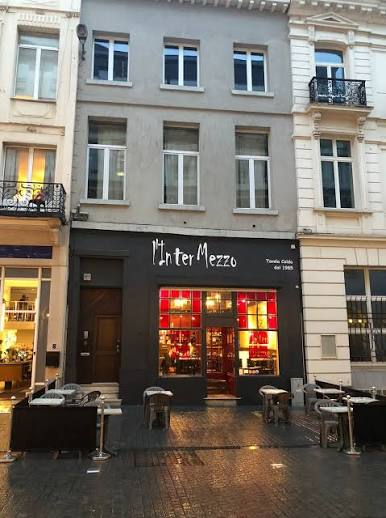

Pâtes artisanales, aperitivi et une cantina italienne au cœur de Bruxelles

« Une trattoria ne sert pas seulement à manger — elle sert du temps, de la conversation et des souvenirs. »
Rue des Princes, à deux pas du centre de Bruxelles, l'Intermezzo ouvre ses portes comme une pause italienne au milieu de la journée belge. Pâtes fraîches, sauces mijotées longuement et une carte de vins choisie avec soin composent une cucina simple, faite pour être répétée.
De la linguine artisanale à l'affogato de fin de repas, chaque plat naît de la même idée : peu d'ingrédients, traités avec respect.
Pâtes, antipasti, dolci et la cantina de l'Intermezzo
Notre carte des vins réunit rouges, rosés et blancs italiens — Sangiovese, Merlot, Chardonnay, Pinot Grigio, Brunello di Montalcino, entre autres — avec des options biologiques et biodynamiques. La carte complète, avec les prix au verre et à la bouteille, est disponible à table.
Réseaux Sociaux
Les coulisses de la cuisine, les plats du jour et la vie de la maison